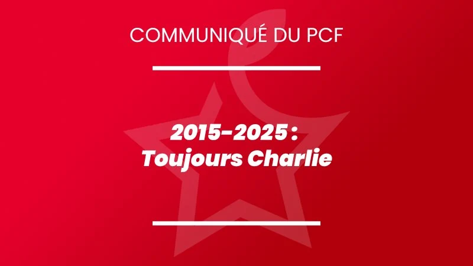

Communiqué relayé
7 janvier 2015. Le PCF rend hommage aux victimes de l’attentat contre Charlie Hebdo
Date indiquée par Facebook · 7 janvier 2025
Repères éditoriaux
Dix ans après l’attentat, nous avons relayé le communiqué du PCF. Il rend hommage aux victimes et réaffirme l’engagement du parti pour la liberté d’expression et la laïcité.
Texte conservé avec la publication
Il y a 10 ans, le 7 janvier 2015, la barbarie obscurantiste frappait Charlie Hebdo. 12 femme et hommes, intellectuel·les, journalistes, caricaturistes, policiers, employés perdaient la vie, victimes du terrorisme islamiste, coupables d’avoir brandi l’étendard de la Liberté, d’avoir défendu l’irrévérence, le droit à la caricature et d’avoir entretenu – par l’humour - la flamme de l’esprit critique.
A Montrouge, à la Porte de Vincennes ensuite cinq nouveau meurtres, antisémites et anti-républicain ont endeuillé, à leur tour, la France entière. Avec le décès de Simon Fieschi, le 19 octobre dernier, les frères Kouachi ont fait une nouvelle victime. Son combat pour la vie, sa voix vont terriblement nous manquer.
Ces femmes et ces hommes ont été assassiné·es pour ce qu'ils étaient et pour la part de cette République universaliste qu'ils représentaient ; pour cette part de Liberté, d'Egalité et de Fraternité que chacune et chacun, à sa manière, incarnait.
30 ans après la campagne de terreur menée sur notre sol par le GIA, le PCF continue de combattre sans relâche l’islam politique sous toutes ses formes.
Hier aux côtés des militants progressistes algériens menacés de mort dans leur pays plongé dans la guerre civile ; aujourd’hui, avec toutes celles et ceux qui refusent de céder face aux attaques qui se multiplient contre la laïcité qu’elles viennent de gauche ou de droite.
C'est pour cela que le PCF souhaite inscrire cette date du 7 janvier au coeur de l’histoire et de l’agenda républicains. Le 8 janvier, place du colonel Fabien, nous commémorerons le souvenir de ceux qui sont tombés pour avoir fait l’expérience de leur humanité et présenterons les dessins du concours international « RIREDEDIEU » organisé par Charlie Hebdo.
Déclaration de Fabien ROUSSEL, secrétaire national du PCF – 2015-2025 : toujours Charlie

Sources
Archive rouge · export Facebook · AR-0002-FB-01213
À lire aussi · À Châteaubriant, l’hommage du 22 octobre aux fusillés · Le lien d’origine